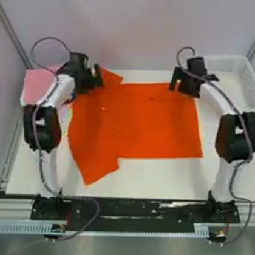
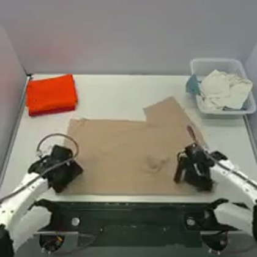
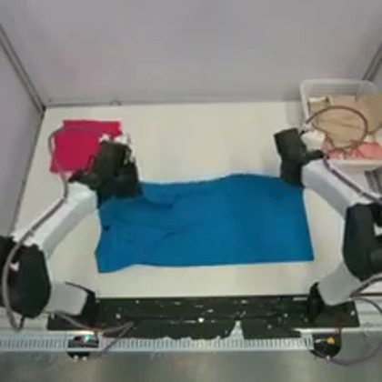
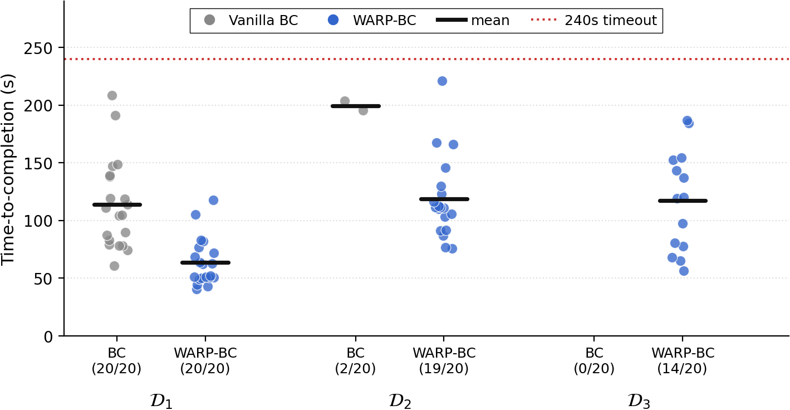
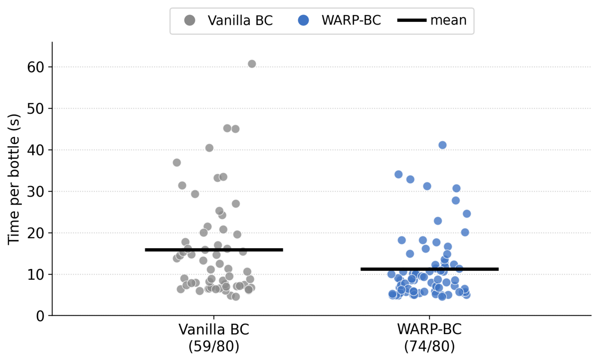

WARP-RM
Lowering the Noise Floor on Robot Data
We gave a folding robot more demonstrations and it got worse. Here is why, and what we did about it.
We were teaching a robot to fold T-shirts by copying human demonstrations. A policy trained on a few thousand of our cleanest folds worked: hand it a crumpled shirt and it folded it reliably. So we trained another model on more demonstrations, expecting it to improve. It fell apart.
We added more examples of the task done right, and the robot got worse at it.
That is not supposed to happen. Every one of those extra demonstrations ended with a successfully folded shirt. If you watched the videos, you would have kept all of them as training data. The trouble was hidden in the middle of the data.
What the failures showed us
Watching the robot fail explained it. It kept getting trapped in the same little adjustments, nudging the shirt and re-gripping without ever committing. The policy wasn't stuck because it had never seen a fold. It had seen thousands of folds. It was stuck because it had also seen thousands of small hesitations and mistakes.
When a teleoperator is actually folding a shirt, they pause, or reposition a sleeve. They change their mind and nudge the fabric a few millimeters. None of that feels like a mistake while you're doing it. Imitation learning assumes it is copying an expert, a premise that holds up better in the theorems than on the two-hundredth fold of the afternoon. To a behavior cloning policy, all of it is training data, and it carries the same weight to the model as the motion that folds shirts successfully.
Read the paper
The full method and detailed results live in the paper and on the project page.
What we actually wanted
The obvious move is to throw the messy demonstrations out. But for one, there is no clean line to draw: "messy" is subjective. Moreover, drop an episode and you lose the good, decisive stretches within, along with the recoveries we most want a robot to learn, the regrip after a near-miss, which tend to show up only in that messier footage. Keep a short, clean-looking run and you still take its hesitations and stalls, because even the fastest demonstrations have a few. Either way, episode-level filtering works at the wrong granularity.
What we wanted was finer than that: look at any single moment in a demonstration and ask whether the task was actually moving forward, then train on the moments that were. Collecting more demonstrations would only add more of the same noise to the mixture. What we actually wanted was not more data, but a better signal-to-noise ratio in the data already on disk: amplify the motion that moves the task forward, and quiet the hesitations and stalls.
We first tried the obvious proxy: train a model to recognize how far you are into a demonstration video as how far along the task is. But elapsed time and real task progress are not the same thing. Freeze a few folding demonstrations at the same halfway point of their run and they sit at clearly different stages of the task, as the frames below show. The clock reads fifty percent for all of them; the task does not. Scoring by elapsed time pins the same label on those different states, and that disagreement enters the model as label noise, exacerbated on long-horizon tasks where pauses and retries pull the clock further out of step with real progress.

26s of 53sflattening
31s of 62sfirst sleeve
27s of 54ssecond foldThe other option is to label progress by hand. Methods like SARM and ARM do this directly, having annotators mark where each subtask begins and ends, or where progress moves forward, stalls, or slips back. The labels are a cleaner supervision signal, but every new task needs its own annotation pass, no two annotators draw the boundaries the same way even working from the same guidelines, and the effort hardly scales to the hundreds of tasks we care about.
Those two issues set the bar. The wall-clock proxy was free but noisy; hand-labeling offered cleaner signal but scaled poorly. The signal we wanted had to be both at once: self-supervised, with no per-task annotation, and local, reading progress over a short window rather than as a position on a global clock. The method that does both is one we call WARP, for Warp-Augmented Relative Progress. Warped playback supplies the labels with no annotation, and the model reads progress locally instead of as overall completion.
Getting more data out of our data
Take a single successful demonstration and play it back at warped speeds. Speed a stretch up and the task appears to rush forward. Slow it down and it crawls. Within a single clip the speed drifts smoothly from slow-motion to fast-forward. And since we set that speed ourselves, we already know how much progress each clip is showing, so every clip comes with its label attached. One demonstration, replayed at many speeds, turns into a whole spread of fast, slow, and in-between examples.
Instead of asking how far into the task, we ask the model to predict a more local question: did the task move forward, stagnate, or regress? Two demonstrations can disagree about how far along the task is at the same timestamp, yet still agree, over a few seconds, on whether it advanced and by how fast. Going from absolute to relative does not erase the noise, after all we're still using pseudo-labels across real demonstrations that have their own speed variation, but it bounds how far off any one label can be. We call this reading a task progress velocity.
Smooth, non-uniform temporal warping as a self-supervision signal is, as far as we know, new for reward modeling. One demonstration, resampled across the range of speeds, becomes thousands of labeled examples. We also play some clips backward, so the model sees progress being undone, an idea we borrow from ReWiND. It is a rough stand-in for a real mistake, but it gives the model a feel for motion heading away from the goal instead of toward it. A standard vision encoder and a small transformer read each clip and predict the progress.
What the signal looks like
The panel below shows the model's predicted progress velocity signal. An episode plays on top while the model's reading is drawn underneath. These are held-out episodes, new runs of the same folding task that the model never saw during training, so the curve is the signal reading footage it was never fit on. Press play, or click anywhere on the curve to scrub.
above the line, the task is moving forward below it, the robot is losing ground. The dashed line is the pace of a clean reference fold. Click anywhere on the curve to scrub the video.
Training on the parts that count
As the policy trains, every short slice of a demonstration is weighted by how much progress the model assigns it. Slices it scores high count more. Slices it scores as stalled or sliding backward are dropped. The robot still learns by imitation. In the paper we call this step WARP-BC.
Did it work?
We split a large pool of successful folds into three tiers by length, since the longer demonstrations carried the most hesitation: efficient folds under sixty seconds, a wider set under ninety, and the widest one under two minutes. One progress model, trained once on the shortest folds, scored all three.
Plain imitation followed the quality of its data straight down. It folded twenty of twenty shirts on the clean tier, two of twenty once the messier demonstrations were mixed in, and none at all on the widest tier. Weighting by the progress reading held the same policy at twenty, nineteen, and fourteen of twenty on the very same data. On the middle tier that is about eighteen times as many finished folds per hour. On the clean tier, where both finish every trial, the weighted policy still folds about 1.8 times faster.

Just keeping the demonstrations that happened to be fast is the lazy version of this. It helps a little on the easy tier and then fails as the data gets messier. Measured against prior curation methods that use human labels and against other self-supervised proxies on matched datasets, the pattern holds: the more selective the weighting, the better the policy survives messier data. The full comparison is in the paper.
Folding has a lot of visual structure, so we wondered whether the whole thing only worked because progress was easy to see on screen. We tried a second task: dropping four plastic bottles into a bin against a ninety-second timeout clock, on the same robot, with the same settings and nothing retuned. This does not rule out task-specific visual cues, but it is a first check that the approach is not unique to folding. The weighted policy placed seventy-four of eighty bottles against fifty-nine for plain imitation, and cut the average time per bottle from 15.9 to 11.3 seconds. Its placements bunch up tight where the baseline trails off into slow attempts.

What's next?
The results are encouraging, but we don't think the story is finished yet. The policy can only imitate behavior that the demonstrations already contain. Pushing past the teleoperator performance ceiling means letting the robot gather new experience of its own. The direction we are most excited about is self-improvement: a policy that practices on its own, grades and refines itself, in principle past the capabilities and throughput of the operators who taught it. This only works if the reward quality remains on the policy's own messy rollouts. Nothing in these experiments demonstrates that yet.
Another caveat: the model's sense of regressing task progress comes from playing successful clips in reverse, an idea we take from ReWiND, whose authors flag the same caveat we inherit. The issue is a distribution gap: a real regression unfolds forward in time, at normal speed, under the task's own causal dynamics, whereas a time-warped reversal is a different visuotemporal distribution. In practice the two seem to overlap enough that the model still recognizes motion heading away from the goal in real, forward-time rollouts, which is what makes the backward signal usable at all. How well these two distributions align is task-dependent, so it is worth validating before relying on it.
The result surprised us because it runs against one of the field's strongest instincts: when a robot underperforms, collect more data. We have become proficient at scaling data collection, both off and on embodiment. The next challenge is scaling data quality. The future may belong not to the teams with the most data, but to the teams that achieve the highest signal-to-noise ratio.
The method, the sampler, and every number above are in the paper and on the project page.